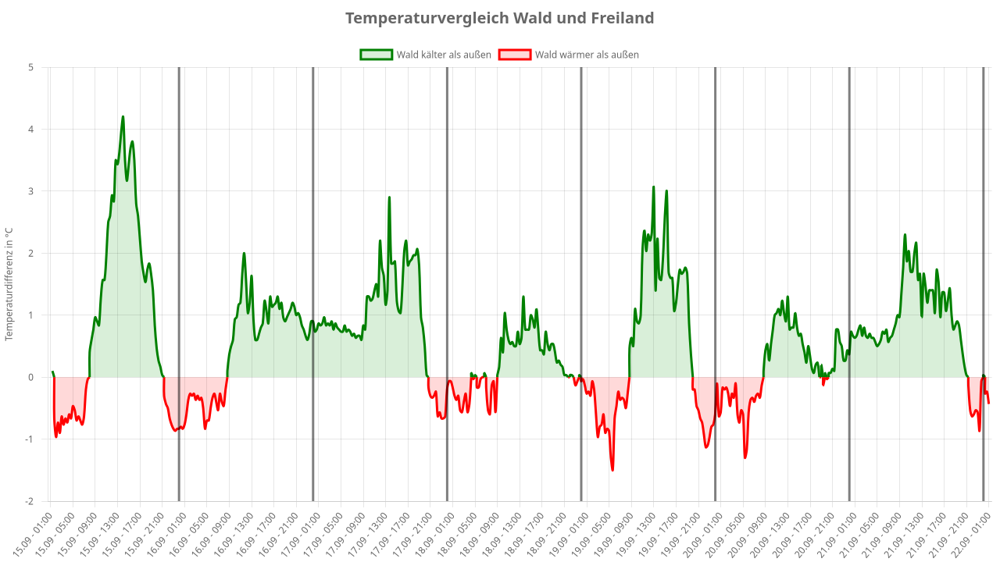

Ein Baum, der mit uns spricht.
Unsere Buche ist mehr als nur Holz und Blätter. Erfahren Sie in Echtzeit, wie der Baum auf Witterungseinflüsse reagiert. Die Messwerte zeigen uns auf eindrückliche Weise, wie stark sich das Waldklima vom Freilandklima unterscheidet.


🌡️ Temperaturregler
Bäume sind natürliche "Klimaanlagen".
Sie können ihre Umgebung um bis zu 10 °C kühlen.
An heißen Tagen verdunsten sie Wasser über ihre Blätter. Das verbraucht Sonnenenergie und senkt damit die Lufttemperatur und produziert ein eigenes "Waldklima".
📝Versuche in den Messreihen zu erkennen, wann die Unterschiede zwischen Wald- und Freilandklima am stärksten sind.
💧 Durststrecken
Wasserstress beginnt, bevor die Blätter hängen.
Wenn die Bodenfeuchte unter einen kritischen Wert sinkt, können die Wurzeln nicht mehr genug Wasser aufnehmen. Der Baum beginnt, Wasser zu sparen, indem er die Spaltöffnungen der Blätter schließt.
Unsere Sensoren messen den Wassergehalt und damit die Wasserverfügbarkeit in den obersten Bodenschichten.
📝 Beobachte die Entwicklungen der Bodenfeuchte in den Messreihen. Hat es in den letzten Tagen geregnet? Wie schnell steigt bzw. sinkt die Bodenfeuchte nach einem Regenfall?
Live-Daten
Aktualisierung alle 20 Minuten via LoRa-Funk im Museum und jede Stunde hier auf der Website.
Temperatur
In der Regel hat der Wald eine ausgleichende Wirkung auf die Temperatur:
- Um die Mittagszeit ist die Temperatur im Wald durch die Verdunstung von Wasser niedriger
- In der Nacht wirken die Baumkronen wie eine "Decke" und vermindern die Wärmeabstahlung der Erdoberfläche
Die Luftfeuchtigkeit
Durch seine Verdunstung reguliert der Wald die Luftfeuchtigkeit im Vergleich zu Freilandflächen. Die relative Luftfeuchtigkeit ist stark an die Temperatur gekoppelt: Je höher die Temperatur, desto mehr Wasser kann die Luft aufnehmen
Bodentemperatur
Die Tagesschwankungen der Bodentemperatur sind geringer als die Schwankungen der Lufttemperatur und nehmen mit der Tiefe ab. Das liegt daran, dass der Boden eine höhere Wärmekapazität hat als die Luft.
Der Waldboden wird durch die Baumkronen vor direkter Sonneneinstrahlung geschützt, wodurch die Bodentemperatur im Vergleich zum Freiland deutlich ausgeglichener ist.
Bodenfeuchte
Das pflanzenverfügbare Wasser wird im Porensystem des Bodens gespeichert. Je geringer die Bodenfeuchte, desto mehr muss der Baum seine Verdunstung einschränken.
Beachte: Die Buche ist ein Herzwurzler, der zwar vor allem in den obersten Bodenschichten Wasser aufnimmt, aber auch Wurzeln in tieferen Bodenschichten besitzt, die durch unsere Sensoren nicht abgedeckt werden können.
Messverläufe
Wählen Sie einen Parameter aus und erfahren Sie mehr:
Lufttemperatur (7 Tage)




Das Projekt "TalkingTree"
Im Stadtwald nahe des Museums steht ein ganz besonderer Baum: der „Talking Tree“. Diese Buche kann zwar nicht sprechen, aber sie zeigt auf faszinierende Weise, wie sich Waldinnenklima und Freilandklima unterschieden.
In verschiedenen Höhen im Boden wurden Sensoren angebracht, die Temperatur, Luftfeuchtigkeit und Bodenwassergehalt messen. Ein Referenzsensor am Museum ergänzt die Daten. Die Messwerte werden alle 20 Minuten per LoRa-Funk übertragen und im Museum sowie online dargestellt.
Warum das Ganze?
Wir möchten den Besuchern unsichtbare Vorgänge im Wald sichtbar und greifbar machen. Hatten Sie nicht schon mal das Gefühl, dass sich die Luft im Wald anders "anfühlt" als im Freiland? Der Talking Tree zeigt anhand seiner Messdaten einfach aber eindrucksvoll diese Unterschiede.
Wie funktioniert das?
Mit Sensoren am Baum und einem Referenzstandort am Museum messen wir verschiedene Umweltparameter. Alle 20 Minuten werden die Daten per LoRa-Funk übertragen und in Echtzeit visualisiert. So können Besucher:innen sofort sehen, wie der Baum auf die aktuellen Wetterbedingungen reagiert.
Die Sensoren
Die Sensoren messen die Temperatur, Luftfeuchtigkeit und Bodenfeuchte in verschiedenen Höhen am Baum und im Boden. Ein Referenzsensor am Museum misst die Freilandbedingungen.
Feuchtigkeitsmessung: Im Inneren sitzt ein elektronisches Bauelement (Kondensator), dessen elektrische Eigenschaften von der umgebenden Feuchtigkeit abhängen. Diese minimalen Änderungen werden mit mit einem Microcontroller erfasst und ausgewertet.
Temperaturmessung: Ein integrierter Halbleiter-Sensor registriert die Umgebungstemperatur.
Die Funkstrecke
Die Sensoren senden ihre Daten per LoRa-Funk an eine Basisstaion im Museum. LoRa ist eine Funktechnologie, die speziell für die Übertragung von kleinen Datenmengen über lange Strecken entwickelt wurde. Sie ist energieeffizient und ermöglicht es, die Sensoren mit Batterien zu betreiben, die mehrere Jahre halten können. Eine Technologie, die auch in SmartHomes und der Landwirtschaft eingesetzt wird.
Die Datenvisualisierung
Die empfangenen Daten werden in Echtzeit auf der Website und im Museum visualisiert. So können Besucher:innen sofort sehen, wie der Baum auf die aktuellen Wetterbedingungen reagiert. Die Visualisierungen zeigen die Temperatur, Luftfeuchtigkeit und Bodenfeuchte in verschiedenen Höhen am Baum und im Boden sowie die Freilandbedingungen am Museum.
Datenarchiv
🔒 Zugang zum Datenarchiv
Hier finden Sie die vollständigen Messdaten des Talking Tree. Der Zugriff ist geschützt, da die Daten nur für interne Zwecke bestimmt sind. Falls Sie interessiert an Daten und Auswertungen sind, kontaktieren Sie bitte Dr. Rudolf Schierl unter mail@rschierl.de
Bitte loggen Sie sich ein:
✅ Zugriff gewährt. Download 2026.csv
Impressum
Angaben gemäß § 5 TMG
Förderkreis für das Museum Wald und Umwelt und die Umweltstation Ebersberger Forst e.V.
Marienplatz 1
Rathaus
85560 Ebersberg
Vereinsregister: VR 200694
Registergericht: Amtsgericht München
Vertreten durch:
Dr. Rudolf Schierl
Kontakt:
Telefon: 08092 8255-52
E-Mail: info@foek-ebe.de